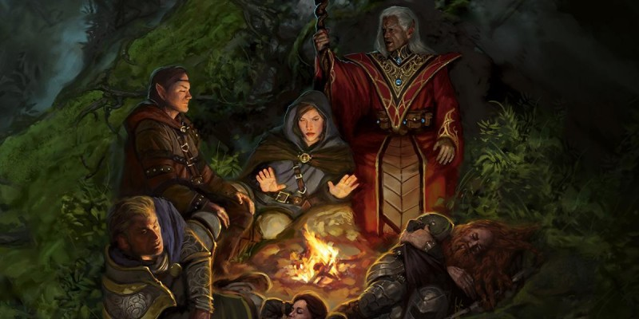

Sage Advice : Partir à l'aventure
Y a-t-il une limite stricte au nombre de repos courts que les personnages peuvent prendre par jour, ou est-ce uniquement le MD qui décide ?
La seule véritable limite au nombre de repos courts que vous pouvez prendre est le nombre d'heures par jour. Mais en pratique vous êtes également limité par les contraintes de temps de l'histoire et par les ennemis qui peuvent venir les interrompre.
Les espaces extra-dimensionnels, comme un demi-plan ou l'espace créé par le sort corde enchantée, sont-ils considérés comme étant sur un plan d'existence différent ?
Un espace extra-dimensionnel est à l'extérieur d'autres plans. Par conséquent, si vous êtes sur le plan matériel et que votre ennemi est dans un espace extra-dimensionnel, vous n'êtes pas considérés comme étant sur le même plan d'existence.
Comment peut-on déterminer que quelque chose est magique dans le jeu ?
Pour une discussion complète sur le sujet, référez-vous à la question Le souffle d'un dragon est-il magique ?
Quel effet peut réduire l'épuisement ?
Le sort restauration supérieure peut réduire l'épuisement.
Y a-t-il un moyen prévu pour récupérer une Intelligence perdue, comme dans le cas où un dévoreur d'intellect la réduit à 0 ?
Le sort restauration supérieure peut supprimer la réduction d'une valeur de caractéristique.
Qu'arrive-t-il après le niveau 20 ? Y a-t-il un plafond au niveau d'un personnage ?
Le niveau le plus élevé est 20. La section des Récompenses épiques du Guide du Maître (p.231) offre quelques idées pour continuer la progression d'un personnage.
L'état effrayé dit « tant que la source de sa peur est dans sa ligne de vue ». Cela signifie-t-il que l'on a un désavantage aux jets d'attaque et aux jets de caractéristique même si la source est invisible mais que l'on a une ligne de vue claire vers son espace ?
Non. Si vous ne pouvez pas voir quelque chose, c'est que ce n'est pas dans votre ligne de vue. Le terme « ligne de vue » est à prendre au sens français du terme ; il n'a aucune signification particulière dans les règles.
Est-ce que lancer un sort durant un repos court interrompt le repos ?
Oui. Les sorts sont plus demandant que les activités listées page 186 du Manuel des Joueurs : « manger, boire, lire ou panser ses plaies ».

Traduction du Sage Advice Compendium v2.5